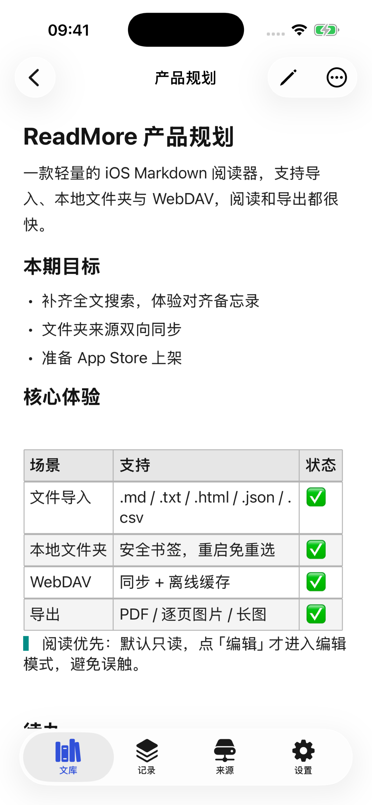
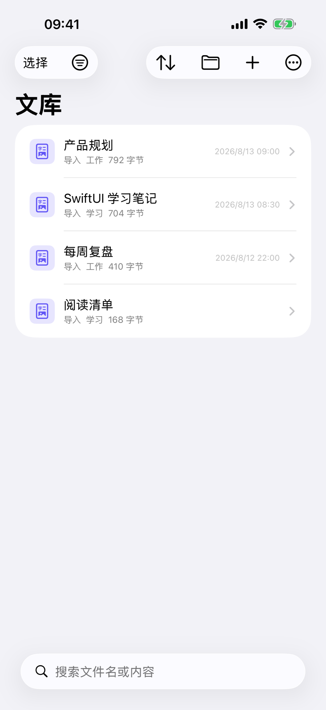

为阅读而排版Built for reading
表格、代码高亮、脚注、front matter、[[双链]] 跳转和文内查找；本地文件夹、iCloud、WebDAV 随时离线阅读。Tables, code highlighting, footnotes, front matter, [[wikilinks]], and find in document. Read offline from local folders, iCloud, or WebDAV.
手机上的 Markdown 阅读与快捷编辑Read and quickly edit Markdown on your phone
打开本地文件夹、iCloud 或 WebDAV 里的 Markdown，离线阅读；点一下勾选任务、随手改几行，原文件原样保存。
Open Markdown from local folders, iCloud, or WebDAV and read offline. Tick a task or fix a few lines — your original file is saved as-is.


表格、代码高亮、脚注、front matter、[[双链]] 跳转和文内查找；本地文件夹、iCloud、WebDAV 随时离线阅读。Tables, code highlighting, footnotes, front matter, [[wikilinks]], and find in document. Read offline from local folders, iCloud, or WebDAV.
阅读时点一下就勾选任务；编辑器带 Markdown 键盘工具栏、列表自动续行和草稿自动保存。只改你动过的地方。Tick tasks right in the reader. The editor has a Markdown keyboard toolbar, list continuation, and auto-saved drafts — only what you change is changed.
快捷指令追加笔记、Spotlight 搜索文档；数据保存在本机或你的 iCloud，无需登录、不含广告。Append notes with Shortcuts and find documents in Spotlight. Data stays on device or in your iCloud — no login, no ads.
$…$ 与 $$…$$ 数学公式、Mermaid 流程图 / 时序图 / 甘特图等直接渲染成图，还支持 [TOC] 目录、==高亮==、上下标和 :emoji: 短码。全部在本机离线完成。Math with $…$ and $$…$$, plus Mermaid flowcharts, sequence diagrams, Gantt charts and more, rendered right in the page. [TOC], ==highlights==, sub/superscript, and :emoji: shortcodes too — all offline, on device.
标准、牛皮纸、简洁、报刊四种样式，深浅色都适配；导出 PDF、分页图片或长图时可单独选样式，发给别人也好看。Four styles — Standard, Kraft, Clean, and Journal — each in light and dark. Pick a style per export for PDFs, paged images, or long images that look good when shared.